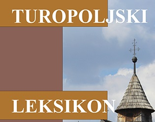
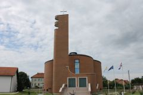
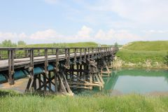
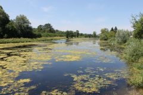
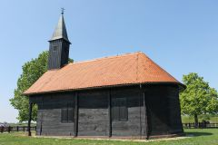
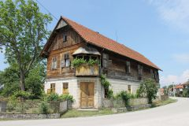
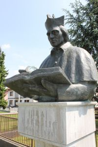
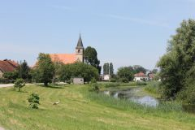
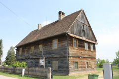

Razgovor s leksikografom i geografom Mladenom Klemenčićem
U travnju iz tiska izlazi Turopoljski leksikon, sveobuhvatno izdanje o povijesti, događajima i mjestima turopoljskoga kraja, kao rezultat suradnje Grada Velike Gorice i Leksikografskoga zavoda Miroslav Krleža. To izdanje na 700 stranica donosi pregled pojmova i osoba vezanih uz turopoljski kraj od prapovijesti do danas. U pisanju članaka i istraživanju sudjelovalo je više od 70 suradnika koji su istražili i opisali povijesna, geografska, politička, etnografska i ostala obilježja toga poviješću bogatog kraja te tako u jednoj publikaciji pokazali jedinstven identitet Turopolja. Knjiga obiluje fotografijama, fotoprilozima i zemljovidima. Tim povodom razgovarali smo s leksikografom i geografom Mladenom Klemenčićem, voditeljem projekta i jednim od dvoje urednika Turopoljskoga leksikona.
Kolega Klemenčić bio je glavni urednik Atlasa svijeta, Atlasa Europe i Hrvatskog općeg leksikona, urednik i suradnik u mnogim izdanjima Leksikografskoga zavoda poput Pomorskoga leksikona, Hrvatske enciklopedije, Zagrebačkoga leksikona i Nogometnoga leksikona, voditelj Kartografskog odsjeka te suurednik publikacije Hrvatska: zemlja i ljudi. Surađivao je na mnogim projektima izvan Leksikografskoga zavoda i bio član nekoliko stručnih i ekspertnih skupina. Bio je urednik i član uredništva nekoliko časopisa te pročelnik Odjela za geografiju i demografiju Matice hrvatske. Povremeni je kolumnist i autor članaka u nekoliko tiskovina.
Kolega Klemenčiću, u Leksikografskome zavodu radite već gotovo četiri desetljeća. Surađivali ste na publikacijama koje su se tiskale u desetcima tisuća primjeraka. Danas pak svjedočimo promjeni čitateljskih navika i uporabe medija za prenošenje znanja. Digitalno doba ima svoje zakonitosti. Kako se to odražava na vaš leksikografski rad? Kako je bilo nekada, a kako je danas?
Promjene koje navodite se više odnose na radnu okolinu i pomagala nego na samu bit posla. Pisanje i uređivanje tekstova isti su posao kao i nekad. Natuknice koje danas pripremamo za naša izdanja se u konačnici ne razlikuju znatno od onih nastalih prije 30 ili 40 godina, no do njih dolazimo na drugačiji način nego nekada. Promijenio se donekle i izdavački program Leksikografskog zavoda, što je također posljedica promjena koje spominjete, ali temeljna izdanja Zavoda i dalje su ista (opća enciklopedija i biografski leksikon), što također upućuje na zaključak da je bit posla ista kao i prije.
U kakvomu su odnosu leksikografija i kartografija? Što je specifičnost kartografske struke unutar širega područja enciklopedike? Koja je uloga članova Kartografske redakcije unutar Leksikografskoga odjela Zavoda? Kojim se temama unutar enciklopedike bave geografi?
Kartografija je specifičan način prezentacije podataka odnosno informacija. U leksikografiji ili, još bolje reći, enciklopedici, a to znači i u Leksikografskom zavodu, uloga kartografije je vizualizacija informacija. Za razliku od fotografije koja vjerno prenosi sliku osobe, mjesta, predmeta ili objekta, karta uključuje i svojevrsnu obradbu i stilizaciju podataka s naglaskom na prostornome rasporedu. Razlikujemo dvije osnovne vrste karata, zemljopisne karte koje prikazuju dijelove Zemljine površine i tematske karte koje prikazuju prostorni razmještaj pojedinih pojava. Razumije se da obje spomenute vrste obuhvaćaju vrlo širok raspon podvrsta i različitih karata. Zemljopisne karte razlikuju se mjerilom pa one sitnog mjerila prikazuju kontinente i oceane, a kako mjerilo postaje krupnije, one prikazuju sve manje dijelove Zemljine površine. Tematske, pak, karte razlikuju se ponajprije po sadržaju koji prikazuju pa mogu biti povijesne, geološke, klimatske, prometne itd. U Leksikografskom zavodu geografi su tradicionalno zaduženi za karte pa su se pojedini kolege i specijalizirali za taj način prezentacije. Najviše je posla za njih na atlasima, no sudjeluju i u izradbi mnogih drugih izdanja, svih onih u kojima se karte rabe kao sredstvo za donošenje informacija. Način izradbe karata dramatično se promijenio, mnogo više nego kada je riječ o radu na tekstu. Ostali geografi ravnopravno s drugim leksikografima pišu i uređuju tekstove, ponajprije natuknice koje se odnose na zemljopisne pojmove (države, naselja, reljefni oblici, vode tekućice i stajaćice), ali i štošta drugo, ovisno o izdanju. Osobno sam pisao različito ostručene natuknice jer za mnoge enciklopedijske pojmove i nema standardne akademske discipline kojoj pojam pripada. U izdanjima opće vrste obično geografi preuzimaju na sebe 15–20 posto ukupnoga broja natuknica i uz povjesničare su u Zavodu najzastupljeniji. Osim toga, Zavod ne može imati usko specijalizirane urednike za manja znanstvena područja, stoga su svi, pa i geografi, upućeni raditi i druga tematska područja. I naposljetku, ako je neko izdanje povjereno uredništvu sastavljenom od troje ili četvero leksikografa, kristalno je jasno da će oni raditi sve struke, a ne samo ono što su studirali.
Bili ste urednik i kartograf mnogih izdanja atlasa, među ostalima i Atlasa svijeta potkraj 1980-ih, Atlasa Europe sredinom 1990-ih i posljednjega, sedmog izdanja Atlasa svijeta 2006. Objavljuju li se danas u svijetu geografski i nacionalni atlasi? Koliko je teško prikupiti, objediniti i prenijeti pravodobne i točne informacije, s obzirom na današnju geopolitičku i demografsku dinamiku?
Vrijeme klasičnih atlasa, velikih zbirki tiskanih karata, iza nas je. Dostupnost kartografskih podloga na međumrežju znatno je smanjila interes i potrebu za klasičnim kartama pa se klasični atlasi sve manje tiskaju. Karte kao zasebna izdanja, međutim, i dalje dolaze u tiskanom obliku. Osobno prednost dajem dobroj tiskanoj karti, posebno ako je riječ o nekom manjem području ili o planu grada. Kod nas u Hrvatskoj problem je što nema knjižare s dobrom ponudom tiskanih karata. Iz iskustva znam da su tiskane vrlo dobre, pa i odlične karte pojedinih županija ili većih otoka, no njih nije moguće ni pregledati, a kamoli nabaviti na jednome mjestu. Dobru kartu Brača možete nabaviti tek kada dođete na Brač, a plan Osijeka samo u Osijeku. Zbog toga je sve više ljudi koji se oslanjaju na digitalne karte i planove, posebice one na prijenosnim računalima i pametnim telefonima. To može biti korisno u pojedinim situacijama, no to guši i potiskuje kulturu korištenja karata, pa i kartografiju kao vještinu.
Vrlo ste aktivni i izvan Zavoda, autor ste mnogih znanstvenih i stručnih članaka i knjiga. Donedavno ste pisali vrlo zanimljive i čitane »Zagrebačke štiklece«, kolumne u Vijencu o povijesti zagrebačkih četvrti, znamenitosti i kulturnih pojava. U fokusu su vašeg zanimanja, osim geografije i kartografije, lokalna povijest i putopisi – u svojim ste se tekstovima bavili odnosom zemljopisa i rock-glazbe, pisali ste o pivu, nogometu, kriketu i budizmu. Plod vaših raznovrsnih interesa jesu i izdanja Leksikografskoga zavoda koja monografski objedinjuju pojedine hrvatske regije, kao što su Enciklopedija Hrvatskoga zagorja i najnoviji Turopoljski leksikon. Odakle ta ljubav prema lokalnomu, tj. težnja da se svakodnevica i fenomeni kao što su sport i prehrana objasne unutar širega kulturnog konteksta?
Ne bih nužno povezao jedno s drugim, dakle, interes za lokalno i zavodski niz tzv. regionalnih izdanja. Lokalna ili kvartovska povijest dio je moje zavičajnosti. Rođen sam i cijeli život živim u Zagrebu pa otud i interes za dijelove grada uz koje sam životno vezan. I u putopisima nastojim uočiti manje poznate i razvikane detalje, a nastojim uočiti i specifičnosti pojedinih mjesta te sličnosti i razlike s onime što mi je poznato iz moje zagrebačke svakodnevice. Naša zavodska izdanja iz niza »Enciklopedije i leksikoni hrvatskih gradova i regija« meni se čine logičnim, pa i poželjnim izborom za jednog geografa. Izazovna su mi već i zbog toga jer otvaraju nova područja rada. Ako radite dugo vremena na općoj enciklopediji ili atlasu, neprestano radite s manje-više stalnim fondom pojmova. Tu i tamo se nešto doda, ali glavnina ostaje ista. U našim regionalnim izdanjima samo manji broj pojmova obrađen je u nekom drugom izdanju, a većina su potpuno novi pojmovi za obradbu. Osim toga, regionalna izdanja omogućuju mnogo dublji i temeljitiji uvid u to područje nego što je to ikad prije bio slučaj s nekim zavodskim izdanjem. Novi pojmovi meni su veći izazov nego reciklaža stare, više puta pregledane građe. Djelomice je moj pojačani angažman na takvoj vrsti izdanja rezultat i slučaja – u trenutku kada je Zavodu zatrebala osoba s iskustvom za rad na Enciklopediji Hrvatskoga zagorja bio sam slobodan pa sam se mogao i ponuditi za taj posao. Turopoljski leksikon došao je potom kao logičan nastavak rada na Enciklopediji Hrvatskoga zagorja.
U protekle tri godine u središtu je vašeg profesionalnog rada Turopoljski leksikon, djelo koje će za manje od mjesec dana izaći iz tiska. Na njemu je radilo više od 70 suradnika raznih struka, povjesničara, politologa, geografa, etnologa, sociologa, povjesničara umjetnosti, teologa... Pred kakvim se izazovima nalazi urednik koji mora objediniti specifične stilove pisanja mnogih autora i od tog mozaika napraviti cjelinu koja jamči pouzdanu, suvislu i točnu informaciju. Kako ste odlučivali koje teme uvrstiti i koliki prostor dati pojedinim natuknicama? Koliko Vam je u tome pomoglo iskustvo koje ste stekli radeći na sličnim izdanjima, poput Istarske enciklopedije i Enciklopedije Hrvatskoga zagorja? U čemu se Turopoljski leksikon razlikuje od tih izdanja? Zašto leksikon, a ne enciklopedija?
Sve su to naslovi istoga niza. Iako je riječ o različitim dijelovima Hrvatske, malo temeljitija analiza pokazala bi da je zapravo riječ o sličnom izboru pojmova. Kada smo započeli raditi Enciklopediju Hrvatskoga zagorja, prvo što smo napravili bila je temeljita analiza abecedarija Istarske enciklopedije. Na temelju istarskog abecedarija pristupili smo sastavljanju zagorskog abecedarija. Slično se ponovilo i s Turopoljskim leksikonom, samo što je u tom slučaju kao predložak poslužio abecedarij Enciklopedije Hrvatskoga zagorja. Bez obzira na sve razlike koje postoje između, primjerice, Istre i Turopolja, naša su regionalna izdanja rađena po istome ključu. Jasno je da je izbor osoba ili naselja različit, ali je način na koji su natuknice napisane isti. Razlika između enciklopedije i leksikona u spomenutom zavodskom nizu nije velika. Kada smo prije gotovo 20 godina osmišljavali niz, zapisali smo da su enciklopedije predviđene za veće regije, a leksikoni za manje regije i gradove. Razlika je, dakle, ponajprije u opsegu područja. Hrvatsko zagorje, rekao bih, vjerojatno je najmanja hrvatska regija za enciklopediju. Turopolje je pak idealan primjer male regije za leksikonski atribut. U izvedbenome smislu nema veće razlike, abecedariji su slični, jedino što zagorska enciklopedija ima više sinteznih natuknica od Turopoljskoga leksikona. Uzet ću za primjer kajkavsku književnost. Ta natuknica dobila je u Enciklopediji Hrvatskoga zagorja velik sintezni tekst. Dakako, naglasak je na kajkavskoj književnosti nastaloj na zagorskome području. U Turopoljskome leksikonu takve natuknice nema iako je i Turopolje kajkavski kraj, ali ipak premalo da bi se moglo govoriti o »turopoljskoj« komponenti kajkavske književnosti. Veća atomizacija pojmova i možda nešto veći broj opsegom malih natuknica od desetak redaka, na to se svodi ta razlika, ali mislim da većina čitatelja to neće ni primijetiti. Kad je riječ o likovnoj opremi, nema razlike među našim regionalnim izdanjima. Leksikon je jednako bogato ilustriran, pa i dizajniran, kao i enciklopedija. Velik broj suradnika uobičajena je situacija u našim projektima, važno je da se tekstove uredi na isti način. A suradnicima dajemo i iste predloške. Kada dogovaramo suradnju, dajemo im ogledne tekstove iz prijašnjih izdanja ili ih upućujemo na to da se nastoje držati okvira postavljenoga u odgovarajućim tekstovima iz prijašnjih izdanja. Drže li se predloška, njihovi će tekstovi biti slični. Kada je riječ o Enciklopediji Hrvatskoga zagorja i Turopoljskome leksikonu, velika je sreća bila da smo uspjeli sačuvati i gotovo isti sastav uredništva. Kad imate uigranu i uhodanu ekipu, mnogo je lakše raditi, nema lutanja i točno se zna tko će koji dio posla bolje obaviti. Isticao sam i prije, a želim i ovom prigodom naglasiti da naše projekte ne može realizirati jedna osoba. Naša izdanja rezultat su kolektivnoga rada. Izradba enciklopedije ili leksikona, svejedno, podrazumijeva uzajamno konzultiranje, dopunjavanje i usklađivanje urednika, uz svesrdnu pomoć zavodskih stručnih službi, od kojih svaka u jednom trenutku ima ključnu ulogu za nesmetano odvijanje i napredak projekta.
Osim kao urednik, Turopoljskomu leksikonu pridonijeli ste i kao autor. Možete li izdvojiti nekoliko natuknica i tema o kojima ste pisali? Hoćemo li u Leksikonu pronaći neke dosad nepoznate činjenice iz života Turopoljaca i povijesti turopoljskoga kraja? Možete li nam otkriti barem jednu?
Svi članovi užeg uredništva napisali su velik broj natuknica, od kojih su samo neke potpisane, a ispod mnogih je stavljeno famozno R., što znači »redakcija«, iako je zapravo i to rad nekoga od nas. Kao autor najviše sam potpisao naseljskih natuknica, a u Turopoljskome leksikonu obradili smo više od 120 naselja. Na pitanje o manje poznatim činjenicama teško mi je odgovoriti. Vjerujem da će većini čitatelja mnogo toga biti prva informacija, nova spoznaja. Obično su većini najzanimljivije osobe. Razmjerno je mali broj osoba obrađenih u Turopoljskome leksikonu prije bio obrađen u drugim izdanjima Zavoda. Drugim riječima, velik broj biografskih članaka biti će prve sustavne biografije tih osoba, a budući da smo obrađivali i živuće osobe, uključujući i aktivne, pretpostavljam da će većina zanimanja biti usredotočena na tu vrstu natuknica, a uz to idu i neizbježne primjedbe.
Pokazalo se da lokalna zajednica može umnogome pridonijeti velikim projektima kao što su bili Enciklopedija Hrvatskoga zagorja i u posljednje tri godine Turopoljski leksikon. Smatrate li da postoji još prostora za produbljivanje suradnje i postoje li planovi da Leksikografski zavod nastavi u tom smjeru te na sličan način obradi još koju hrvatsku regiju ili uže područje?
Suradnja s lokalnom zajednicom dobar je model. Nije tu riječ samo o materijalnoj potpori, inače itekako važnoj za realizaciju projekta. Zavod je ustanova »općega« tipa, središnji nacionalni izdavač, i ne raspolaže posebnim informacijama ili građom za pojedine dijelove zemlje. Zbog toga je nužno uključivanje lokalne zajednice. U slučaju Istarske enciklopedije autorski i urednički prinos samih Istrana bio je presudan. U slučaju Enciklopedije Hrvatskoga zagorja, uz zavodsko uredništvo, bila su dva vanjska urednika, obojica s dugogodišnjim iskustvom rada na zagorskim temama. K tome, sudjelovao je i velik broj vanjskih suradnika iz Zagorja. Angažman svih tih ljudi na neki je način poticala i Krapinsko-zagorska županija, partner Zavoda u realizaciji projekta. Sličan je model rada primijenjen i u realizaciji Turopoljskoga leksikona. Zavodsko uredništvo imalo je veliku potporu vanjske urednice koju je imenovao Grad Velika Gorica. Riječ je o gospođi Katji Matković Mikulčić, ravnateljici Gradske knjižnice Velika Gorica. U prostorima njezine knjižnice u protekle tri godine imali smo svojevrsno »terensko uredništvo«, gdje smo održali mnogobrojne susrete i dogovore i sastajali se sa suradnicima iz Velike Gorice i drugih turopoljskih mjesta. Osim toga, imali smo na raspolaganju bogatu građu knjižnične zavičajne zbirke, bez koje ne bi bilo moguće realizirati projekt. Rekao bih da regionalno izdanje ne bi imalo ni smisla bez djelatnog sudjelovanja lokalne zajednice. S kime ćete naposljetku podijeliti radost izlaska knjige ako ne s onima o kojima i za koje se sve i radilo?
Jedno od popularnijih izdanja Leksikografskoga zavoda bio je i Zagrebački leksikon koji je već nekoliko godina rasprodan. Možete li zamisliti novo ili obnovljeno izdanje tog iznimno traženog i cijenjenog vodiča kroz prošlost i sadašnjost grada i okolice, a koje bi bilo nadopunjeno novim podatcima i promjenama gradskih vizura i struktura, kao posljedicama potresa koji se dogodio prije točno godinu dana, i sve izraženijih demografskih trendova?
Zagrebački leksikon meni je bio jedan od dražih projekata na kojima sam radio. U to doba, međutim, moj primani posao u Zavodu bili su Nogometni leksikon i potom Atlas svijeta pa sam na Zagrebačkom leksikonu radio manje, tek koliko sam stigao uz ostalo, uglavnom kao autor pojedinih tekstova. To je izdanje za kojim često posegnem i dandanas, kada mi zatreba neka informacija o našem gradu. Od izlaska Zagrebačkog leksikona prošlo je već 15 godina, što je samo po sebi dovoljan vremenski odmak za novo izdanje, a ima i drugih dobrih razloga. Zagrebački leksikon, kao što znate, nije imao biografske članke. Trebalo bi to nadoknaditi, a nije jednostavno jer bi već i sam izbor uvrštenika bio prilično zahtjevan. Rijetki su zaslužni Hrvati koji nisu u svom životu imali barem nekakvu vezu sa Zagrebom. Trebalo bi postaviti čvrste kriterije za odabir osoba, a potom i napisati biografije koje bi uz opće podatke uključile specifičnu »zagrebačku« komponentu. Prvo izdanje bilo je i razmjerno skromno ilustrirano pa bi i to valjalo nadoknaditi. Posljedice potresa zacijelo bi u ilustrativnome dijelu bile posebno naglašene.
Postoji li možda projekt koji nikad niste uspjeli realizirati, a bio bi vrijedan doprinos hrvatskoj leksikografiji i kartografiji?
Imao sam sreće da sam u svom radnom vijeku sudjelovao na različitim projektima. Kartografskim rječnikom kazano, radio sam u svim mjerilima, od karte svijeta do topografske karte i plana grada. S jedne strane stoje Atlas svijeta i Opći leksikon kao primjeri općih izdanja globalnog razmjera. S druge su pak strane naša regionalna izdanja, gdje ste tematski zatvoreni unutar malog prostora, samo neznatnog dijela Hrvatske, koja ionako nije površinom velika zemlja. Kartografski iskazano, tu ste na topografskoj karti, a povremeno i na planu grada, Krapine ili Velike Gorice, svejedno. Ne mogu, dakle, reći da sam cijeli vijek stjecajem okolnosti radio jednu vrstu izdanja pa mi je žao da se nisam mogao više baviti onom drugom, no kada bih imao moć utjecaja na izdavački program Zavoda, odmah bih upisao regionalnu enciklopediju posvećenu jednoj od dviju naših velikih povijesnih pokrajina. Pritom ne bih puno razmišljao koja bi meni bila draža – dalmatinska ili slavonska enciklopedija. Dalmaciju poznajem mnogo bolje, a i životno mi je bila bliža, no s jednakim žarom radio bih i slavonske teme. Bio bi to velik izazov za cijeli Zavod i dugotrajan projekt s dva do tri sveska, koji bi se razvukao i na cijelo desetljeće. Zahtijevao bi dobru pripremu i svojevrsnu mobilizaciju, otvaranje privremenog ureda u Splitu ili Osijeku a, naravno, i sigurno materijalno zaleđe u vidu potpore nekoliko naših županija. No, rezultat bi bio vrijedan prinos ne samo poznavanju dotične pokrajine nego i cjelovitijem sagledavanju nacionalne tematike. Jer, što su drugo naša regionalna izdanja, nego zapravo svesci neimenovane velike nacionalne enciklopedije? Volio bih biti kotačić u složenom mehanizmu koji bi preuzeo na sebe realizaciju takva projekta, no s druge strane, sagledavajući realnost, i zavodsku i svoju osobnu, ne očekujem da se to i dogodi.
Leksikografski zavod prihvatio je prošle godine prijedlog projekta radnoga naziva Hrvatska: županije, gradovi, općine. Zamišljen je u prvome redu kao internetsko izdanje koje će obrađivati upravno-teritorijalnu podjelu Republike Hrvatske okupljanjem statističkih, povijesno-geografskih i kartografskih podataka. Možete li nam reći nešto više o projektu koji je trenutačno još u fazi razradbe i planiranja? Kojim je korisnicima namijenjen i zašto ga smatrate važnim?
To je nov projekt koji se s jedne strane nadovezuje na niz regionalnih izdanja, a s druge i na tradiciju atlasnih izdanja, budući da je predviđen velik broj karata na kojima će detaljno biti prikazan cjelokupni nacionalni teritorij. Na jednak način, s istim pokazateljima i podatcima te s kartama istoga mjerila, bit će prikazane sve upravne jedinice. Karte svih jedinica, izrađene u mjerilu 1: 100 000, kada budu gotove, kao cjelina će zapravo biti nacionalni atlas. Smatram da će izdanje biti korisno širokom krugu korisnika, a posebice bi za njega trebala biti zainteresirana tijela lokalne uprave i samouprave kao i druga državna tijela. Predlagači tog projekta moji su mlađi kolege, a ja im mogu zahvaliti što ću do odlaska u mirovinu raditi zajedno s njima.
I za kraj, nekoliko jezičnih pitanja koja se tiču vaše struke, a o kojima se često mogu čuti različita mišljenja i rasprave u javnosti. Koja je razlika između zemljopisa i geografije? Zašto u školama više nemamo zemljopis, već imamo geografiju? Postoji li razlika između zemljovida i geografske/zemljopisne karte? Daje li se prednost određenom obliku? Je li dopušteno rabiti pojam mape umjesto zemljovida?
Geografska zajednica u Hrvatskoj nije velika, a institucionalno riječ je zapravo o dva sveučilišna odjela, starijem u Zagrebu i mlađem u Zadru. Ostali geografi većinom su pojedinačno rasuti po institutima i školama. Unutar same struke uglavnom se ne vodi intenzivna komunikacija i razmjena mišljenja, no strukovna stajališta ponekad ipak dolaze u javnost. Prema jednom od takvih stajališta geografija je pojam rezerviran za znanost i akademsku razinu, dok je zemljopis opće znanje, ono što se uči u osnovnoj školi. Geografija je po tome jamstvo stručnosti i nedodirljivosti, a zemljopis devalvacija tih vrijednosti. Većina mojih strukovnih kolega navedenu razliku smatra presudnom, gotovo do razine opstojnosti geografije kao sveučilišne discipline. Uzimajući u obzir da se geografija na zagrebačkom sveučilištu nalazi na Prirodoslovno-matematičkom fakultetu, u društvu s egzaktnim prirodnim znanostima i matematikom, takav strah za opstojnost mogu donekle i razumjeti, no budući da osobno kao geograf u Leksikografskom zavodu nisam nikad patio od kompleksa manje vrijednosti, nisam se ni slijepo držao oštre granice između geografije i zemljopisa. Osim toga, već sam to i ranije istaknuo, u zavodskim sam izdanjima radio toliko različitih struka da se čovjek tijekom vremena i otuđi od matične struke. Između zemljopisne i geografske karte nema razlike, to su sinonimi, baš kao što je i zemljovid treći pojam istoga značenja. Geografska karta dolazi kao neka vrsta naše inačice internacionalizma, kakav se javlja i u drugim jezicima, dok je zemljovid više u duhu hrvatskoga jezika, iako ga imaju i Slovenci. Budući da im ne pridajem razliku u značenju, ostaje samo stilska razlika i mogućnost usporedne uporabe, ovisno o kontekstu. Mapa po meni nema značenje karte, u hrvatskom jeziku to je pojam za nešto drugo. U mapu se nešto ulaže, to je, dakle, svojevrsna zbirka likovnih radova, nacrta ili dokumenata. Kao alternativni pojam za kartu ili zemljovid, mapa je po mom sudu u hrvatski jezik ušla nedavno i nepotrebno. U 1990-ima, kada je bila pojačana nazočnost međunarodnih posrednika, često smo mogli čuti kako se govorilo o kartama, a one su na engleskom jeziku maps. Budući da anglizme primamo olako, tako je i karta postala mapom, a to nam, za razliku od nekih drugih pojmova za koje doista nismo imali vlastitu inačicu, kraj karte i zemljovida nije trebalo.
Iz fundusa fotografija uredništva, snimljenih tijekom rada na Turopoljskome leksikonu


  
  
 